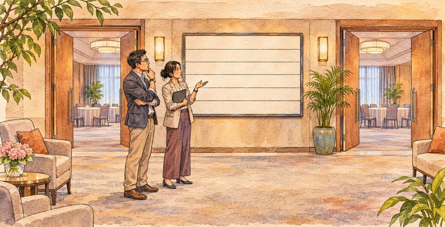

HSP-37 · 香港 · 15–20分鐘 · 會議議程編排 · 與會流程 · 須預留的環節銜接時間
議程排滿了，與會流程走得完嗎？

議程也是一段與會流程
W3C的指引和會議無障礙指引都鼓勵主辦方按參加者的需要作規劃，而不只考慮發表內容。麻省的公共衞生指引亦明確指出，休息時段與參加者在活動之間轉場有關。這些指引僅供規劃參考，並非通用時間表，也不是對香港法律的說明。下文的會議和時間均屬虛構。
課堂決定
你負責編排 Harbour Exchange 的議程。這是一場在香港舉行、為時半天的虛構專業會議。二十四名成年與會者選擇了完整的學習流程：全體會議、工作坊 A、工作坊 B 和總結討論。每位與會者都希望全程參與四個環節。只進入過每個會場，並不算達到這個目標。
所有參加者和講者都可以留到13:00。兩個方案所用的會場、人手、無障礙材料、協助及應急安排相同，均已有經費支持。會場和支援均可使用至13:00，毋須額外付費。兩個方案均未對外公布，也未寫入合約，因此沒有撤回任何既有的與會者權益。
全體會議於09:00–09:45在 A 廳舉行。工作坊 A 亦在同一場地舉行，10:00開始，原先預計10:40結束。工作坊 B 在 B 廳舉行，總結討論則回到 A 廳。兩個方案的分別只在於後段環節的時間安排。
這批與會者在環節之間需要預留十五分鐘休息及處理個人需要。休息過後，如需轉換會場，還要另加十分鐘，當中包括入座時間。這兩段時間不得重疊，是為本個案全體與會者議定的要求，並非醫療診斷，也不是通用的無障礙最低要求。兩段時間均不得縮短。
全體會議後，與會者留在 A 廳，所以十五分鐘已足夠。工作坊 A 或 B 均不能改換場地，也沒有遙距替代安排或同步舉行的其他場次。B 開首十分鐘有一項必要練習，不會重做。主辦方必須選擇一套切實可行的與會流程，而不是追求名義上有最多環節獲出席。
議定的環節之間休息規則適用於全體會議、A 和 B 結束後。總結討論結束後，毋須再安排休息；已有經費支持的無障礙離場安排需時五分鐘。這是已確認、只適用於這批虛構與會者的另一項要求，並非其他活動的規則。
後段環節的建議安排| 環節 | C · 緊湊 | L · 較遲 |
|---|
| B，B 廳 | 11:05–11:45 | 11:20–12:00 |
| 總結討論，A 廳 | 12:10–12:40 | 12:25–12:55 |
你的決定你會暫時選擇哪個方案？請按次序列出與會者從 A 結束到 B 開始，再到總結討論的流程。分清須預留的休息時間、轉場時間和任何剩餘的緩衝時間，不要把整段間隔都當作可靈活運用的時間。
第二輪 · 多了一項資料
一次完整彩排現已確認，A 的必要示範需時五十分鐘，而非四十分鐘。在這個課堂情境中，所需時間不能更改：A 必須於10:00–10:50舉行。刪減內容便無法按承諾提供工作坊。其他環節的時長和開始時間，以及各項無障礙要求，均維持不變。
試行 C 時，出席紀錄顯示二十四名與會者全數出席兩個工作坊，因為只要曾經入場便會記錄，並不記錄到達時間或是否全程參與。與會者在 A 結束後，按議定安排休息十五分鐘，再用十分鐘轉場。B 仍按時間表所列時間開始和結束。這些觀察是虛構的，用於找出問題，並非因果研究。
團隊在推出議程前，仍可從兩套完整方案中選擇，但不能單獨調動個別環節、延至13:00之後，也不能要求與會者縮短休息或轉場時間，或放棄 A 的部分內容。全體與會者和已有經費安排的供應商均接受 L 較遲結束，但選擇 L 就不能像 C 那樣較早離場。
你的決定現在，哪個方案能讓與會者完整參與每個必須出席的環節？請計算採用 C 時抵達 B 的時間，以及會錯過多少分鐘。解釋為甚麼即使體驗並不完整，出席紀錄仍可能看似理想，並提出一項在推出議程前更合適的核查方法。
講評 · 彩排前
原先 A 於10:40結束，休息至10:55，轉場至11:05。C 的 B 正好在這一刻開始，沒有任何餘裕。L 的 B 於11:20開始，在所需的休息和轉場時間之外，還有十五分鐘餘裕。按原先給出的時長，兩套與會流程都可行。
B 結束後，兩個方案在總結討論前均留有二十五分鐘：十五分鐘休息，十分鐘轉場。按 C，B 於11:45結束，與會者於12:10抵達總結討論會場；按 L，B 於12:00結束，與會者於12:25抵達。這些時段都沒有額外餘裕。
講評 · 重排實際與會流程
彩排後，A 改為10:50結束。須預留的休息時段為10:50–11:05，轉場時段為11:05–11:15。按 C，與會者抵達 B 時，已比11:05的開始時間遲了十分鐘。即使人人其後都能入場並獲記錄為出席，仍會錯過開首的必要練習。
L 的 B 於11:20開始，即與會者抵達後五分鐘。B 舉行至12:00，之後休息至12:15，轉場至12:25，總結討論至12:55。這符合13:00的時限，尚餘五分鐘。這個安排沒有憑空增設環節或人手，也沒有假設轉場可以加快。
按本個案訂明的完整與會流程要求，應選 L。L 比 C 遲十五分鐘結束；即使與會者已接受這個安排，不能較早離場仍是一項實際取捨。C 若維持原樣，便無法符合新要求。這是在條件確定下得出的可行性結論，並不證明議程愈長，學習成效或身心狀況就一定愈好。
講評 · 出席不等於全程參與
按 C 的出席紀錄，每個工作坊均有二十四人出席，但無一人參與到 B 開首的十分鐘。按人數加總，錯過的時間為24 × 10 = 240人分鐘。這只是時長總數，並非量度所得的學習損失或身心狀況評分，也不表示 B 的其餘部分全無價值。
不要為了讓監察指標好看，便把「全程參與」重新定義為「曾經入場」。應分開核查：與會者是否在必要練習開始前抵達、是否參與了所要求的內容，以及他們是否表示能按安排使用休息和轉場時段。點算人數只回答誰曾出現，不能說明所設計的與會流程能否完整走完。
講評 · 說清適用界限
L 在 B 開始前留有五分鐘餘裕，但不能應付所有超時情況。從 B 到總結討論，除了須預留的休息和轉場時間，仍沒有額外餘裕。要有根據地聲稱議程能按安排落實，就應使用實際支援安排試行整套流程，確認各環節的時長切合實際，並事先議定遇到中斷時如何應對。
兩個方案都不能作為撤去無障礙支援或催促與會者加快步伐的理由。實際需要可能有變，與會者仍可自行離開。這些計算只用來檢視所提供的完整與會流程對這批設定的與會者是否可行，而不是判斷應否要求每個人都按流程參與。
教師說明
把 A 結束後的時間分成三段畫出來：須預留的休息時間、轉場時間和剩餘的緩衝時間。然後把 A 原定的四十分鐘改為五十分鐘。請學生解釋，為甚麼相同的出席人數會掩蓋錯過的十分鐘，以及為甚麼總結討論後未用的時間，無法補回錯過的開首練習。
HSP-09 按賓客的目的選擇接待活動的引導方式；HSP-27 則在固定的參觀安排內編排呈現文化遺產佐證材料的次序。本個案探討環節超時後，為甚麼單憑入場人數可能誤判與會者能否走完整套流程。所有要求及結果均屬虛構。資料來源有助釐清規劃上的不同概念，並非數字假設、醫療結論或法律意見的依據。
第二輪
一次完整彩排現已確認，A 的必要示範需時五十分鐘，而非四十分鐘。在這個課堂情境中，所需時間不能更改：A 必須於10:00–10:50舉行。刪減內容便無法按承諾提供工作坊。其他環節的時長和開始時間，以及各項無障礙要求，均維持不變。
試行 C 時，出席紀錄顯示二十四名與會者全數出席兩個工作坊，因為只要曾經入場便會記錄，並不記錄到達時間或是否全程參與。與會者在 A 結束後，按議定安排休息十五分鐘，再用十分鐘轉場。B 仍按時間表所列時間開始和結束。這些觀察是虛構的，用於找出問題，並非因果研究。
團隊在推出議程前，仍可從兩套完整方案中選擇，但不能單獨調動個別環節、延至13:00之後，也不能要求與會者縮短休息或轉場時間，或放棄 A 的部分內容。全體與會者和已有經費安排的供應商均接受 L 較遲結束，但選擇 L 就不能像 C 那樣較早離場。
你的決定現在，哪個方案能讓與會者完整參與每個必須出席的環節？請計算採用 C 時抵達 B 的時間，以及會錯過多少分鐘。解釋為甚麼即使體驗並不完整，出席紀錄仍可能看似理想，並提出一項在推出議程前更合適的核查方法。